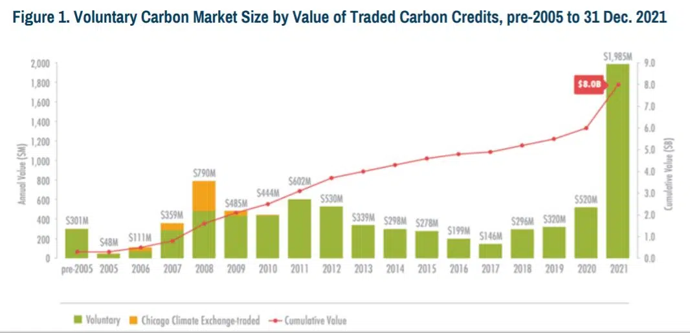
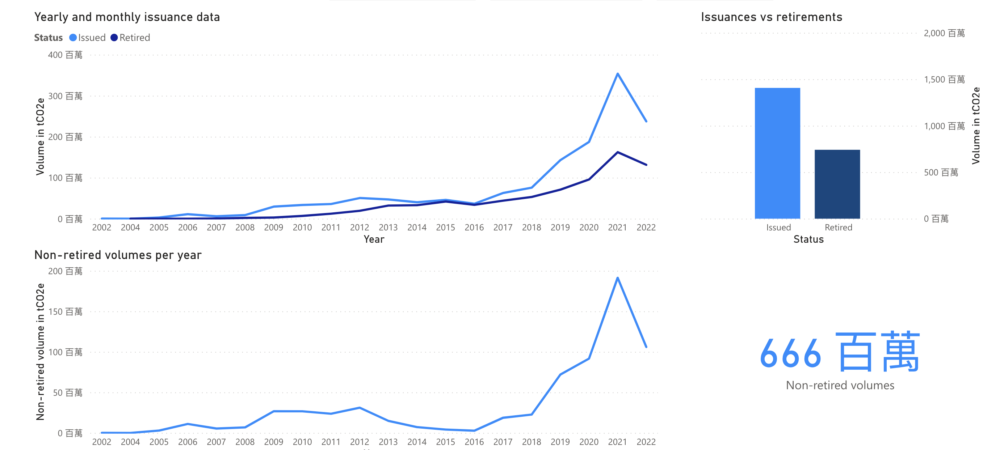

碳抵銷市場已經起飛，這些觀念不能不懂
2022-12-21
什麼是碳抵銷？
碳抵銷（Carbon offset）是一種減碳策略，藉由購買他人減少碳排放、從空氣中將溫室氣體移除的努力成果來抵銷自身的碳排放。
碳抵銷就是種樹嗎？
講到碳抵銷，過去我們都認為就是種樹減碳而已。但事實上種樹造林仍然有其風險（如遇上森林大火，好不容易固定下來的碳又全部釋放了），森林並不是唯一可行的碳抵銷方法。
在聯合國氣候變化框架公約UNFCCC的碳抵銷平台上還有可以看到很多種不同的減碳手法，例如再生能源、社區改良、能源效率提升、廢物處理、農業...也都被認證為碳抵銷計畫。
以The DelAgua Tubeho Neza project計畫為例，該組織從2012年開始與盧旺達政府合作，免費發放給民眾高效能的爐灶，改變過去民眾直接燒柴生火煮食容易產生呼吸道危害、大量碳排放的風險。
目前全球仍有三十億人使用柴火炊煮食物，也因此構成全球碳排的一大來源，而居家空氣污染也是居民一大死因，造成的死亡數甚至高於瘧疾、肺結核和愛滋病的總和。
這項計畫所提供的高效能爐灶可以降低一半的木柴量，也減少73%炊煮時產生的煙霧，因此降低負責生火的孩童與婦女呼吸道疾病機會。
而且，更少的木柴，意味著婦女和孩童可以從每天五小時的木柴搜集活動中解放，藉此提升婦女權益與福祉、孩童受教育的機會。
也因此，這項計畫不只是登列在減碳底下，也登列在「教育」、「健康與安全」、「福祉」等ESG細項底下。
碳抵銷如何申請？
碳抵銷的主角，就是「碳信用點數」。碳信用點數（carbon credits）必須經由國際標準認證，確保其有憑有據，有真實的「額外性」（additionality）才能進行販售。
一般來說，碳信用點數分有兩種：
核證減排量（CERs：Certified Emission Reductions）
認證標準最嚴格的碳信用點數。只有被聯合國清潔發展機制（CDM）認證的項目中，經過收集、測量、認證、簽發所得到的減碳單位。
例如在UNFCCC碳抵銷平台所販售的碳信用點數就屬於CERs，是經由CDM框架認證的環保項目所做的減排努力。
何謂聯合國清潔發展機制？
在1997年京都議定書中設計了三種「彈性機制」：國際排放交易( international emissions trading , IET)、共同減量機制(joint implementation，JI)和清潔發展機制( clean development Mechanism,簡稱 CDM)。
截至目前，CDM無疑是三種彈性機制中發展最成功的。
CDM主要的兩個目標為：1. 協助不受減量目標限制的國家(也就是發展中國家)達到永續發展。2.協助具有減量目標的國家(也就是已開發國家)可以藉由購買CDM產生的抵換額度(offsets)來達成減量承諾。
計畫要獲得認可的前提是，計畫發展者必須要證實此減量計畫具有「額外性」（Additionality），也就是必須證明若是無此減量計畫的情境下，溫室氣體減量不可能發生。
目前總共有三千多個CDM認證計畫運行中，每年平均產生五億個CERs。在2008～2010年間，歐洲的企業總共使用了2.77億CERs進行碳抵銷，協助達到減排目標。
自願減排量（VERs：Voluntary Emission Reduction）
經過聯合國指定的第三方認證機構核發的溫室氣體減排單位，屬於自願減排市場的碳信用額度。認證標準較寬鬆。
也因為VER認證標準比較寬鬆，通常CER可以轉化成VER，但VER不能轉化成CER。
目前國際上常用的VER標準包括有黃金標準，VCS，VER+等等。每個標準都包括了項目類型、基準線測定方法、額外性判斷方法、核查核證方法、註冊系統等等問題。
而選擇哪一種標準核發的VER，也視這個VER的使用場景而定。例如若要在芝加哥交易所交易，那可以選擇CCX標準，如果要在歐洲市場交易，那就要選擇較嚴格的GS和VCS。
自願性碳市場（VCM）有多大？
自願減排量VER的交易市場被稱為「自願性碳市場」（VCM）。在2021年約有5億噸VER被交易，而全球自願減排市場（VCM）也在在這年來到接近20億美元的規模，相較於前年成長了四倍。成長幅度最大的是自然解決方案為主的碳信用點數交易量，以及附帶減碳以外效益（例如前面提的高效能爐灶）的碳抵銷計畫。

從自願減排市場儀表板 可以看出目前尚未被使用掉（retired）的自願減碳點數VER仍有6.6億噸。

而VER碳價格則是由自由市場的供需決定，這裡可以一次看到全球各大碳市場的不同價格。
如何選擇優良的碳抵銷方案？
購買碳抵銷並不是沒有風險的。若購買的碳信用開發計畫認證不足，購買人可能要背負上「漂綠」的風險。事實上
自願減排點數（VERs）有四個主要的國際認證機構，主要有
- VCS Verified Carbon Standard
又名Verra，由氣候團體與國際排放交易協會（IETA）成立作為非營利非政府組織。常作為美國航空主要的碳抵銷計畫認證單位。VCS驗證標準
但就算是主流的VCS認證計畫也有爭議存在，主要是因為各項育林計畫對於樹木被砍伐的風險評估不一，有些樹木砍伐風險可能被高估了。科學家暨前Verra計畫監督人Thales West指出計畫發起人通常會高估他們的減排量，目前現有的碳抵銷計畫評估方法（Methodology）仍然不夠穩固，有許多「幽靈減排」（phantom credit）的空間。
Verra強烈反擊這些批評，認為他們的方法論已有在持續改進，碳抵銷對於減緩氣候變遷仍然有其必要性。
- Gold Standard Verified Emissions Reduction (GS VER)
最常見的碳抵銷認證單位「黃金標準」(Golden Standard），於2006年由世界野生動物基金（WWF-UK）成立，由CDM清潔發展機制標準簡化而來，使用類似的基本驗證方法論。目前只開放給開發中國家申請，主要項目為再生能源與能源效率提升計畫。
- Voluntary Offset Standard （VOS）
2007年成立，是目前最新成立的驗證單位，使用UNFCCC所推廣的驗證標準，驗證方法也類似於黃金標準，有部分的驗證標準甚至超越嚴格的CDM與JI標準。
- Climate, Community, and Biodiversity Standards （CCB）
由氣候社群與生物多樣性聯盟（CCBA）設立，這項驗證標準主要專注於陸地環境保護計畫，在減碳同時提供穩定氣候與維護生物多樣性、幫助社群發展等目標。
如何購買碳信用點數（VERs、CERs）？
最簡單的方法，是從UNFCCC的碳抵銷平台上直接向經由CDM認證的項目購買減排成效。這個平台的運作大致上與一般電商平台無異，並且使用Paypal付款。
而除了透過平台購買，想要減碳的單位也可以透過直接與經碳抵銷標準認證的組織聯絡，進行一對一的交易。
但是在購買碳信用點數（不論是VER或CER）做碳抵銷之前，仍然需要注意四件事情：
- 時機很重要：有些計畫屬於早期投資，可能需要3-5年後才能獲得碳信用點數，但往往可以獲得比市場上更便宜的價格，以及更大的量；或者也可以購買平台上現成的碳信用點數，但往往價格較高也數量較少（畢竟是與其他簽約方賣剩的）
- 你的單位究竟需要抵銷多少噸的碳。實際上要盤查企業自身碳排放並不容易，許多欲申請ESG、SGS認證的企業都卡在這一關。櫛構科技除了專精於運用資料科學技術從數據面減碳減排以外，也連帶協助建構自動化的資料搜集與盤查系統。
- 你的預算空間如何。
- 你能夠投入的心力有多少：你願意花心力尋找碳信用開發商，並直接洽談長期合約？還是更偏好透過中間人協調？
在購買碳信用點數幫公司進行碳抵銷之前，單位必須徹底盤查自身碳排，並且也已經盡到減碳的努力，至少比較過「減排」與「抵銷」之間的成本再做決定。畢竟，碳抵銷的應用場景應該是當企業已經做完一切減排的努力之後，再來完成碳中和的「最後一哩路」。
要徹底盤查組織碳排並不容易，制定減排計劃更難。櫛構科技以資料科學分析碳排放數據，藉由AI標記排碳因子，我們用數據洞察碳排、幫助企業制定減排策略，減碳不用憑感覺。
除了隨手關燈，我們可以做更多。